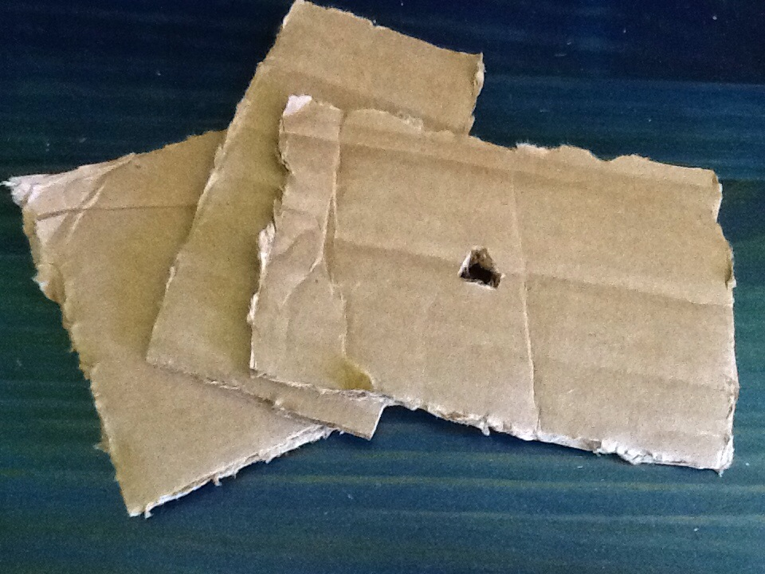
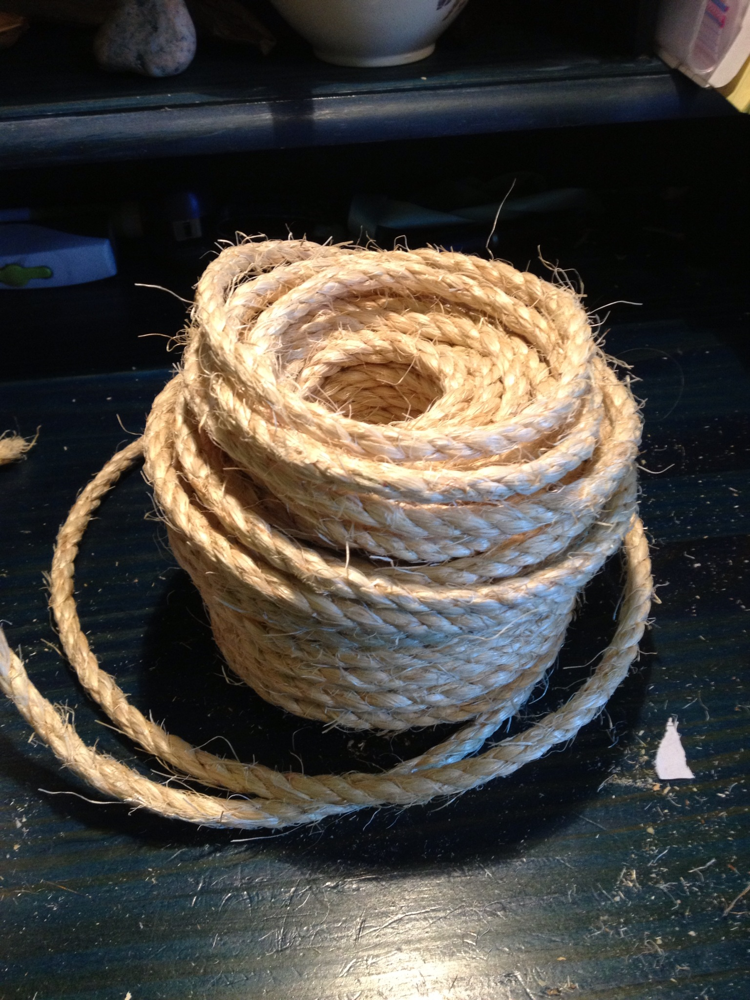

Knots n' Cardboard
MATERIALS: cardboard, rope
1. Cut three pieces of cardboard, one about 3" x 5" and the other
two about 2" x 1". Poke holes in the center of each piece, and
on the larger piece cut two extra holes in two of the corners.

2. Cut three pieces of rope, one about 12" long and the other two
about 6" long. Thread the two shorter pieces through the holes
in the corners of the larger piece of cardboard and tie knots
on either side of the cardboard. Do the same with the larger piece
in the middle hole.

3. Thread the smaller pieces of cardboard onto the middle rope
on either side of the big piece of cardboard. Then tie knots
on the other side of the small pieces of cardboard so they are
secured.
* This is also a good toys for large birds, but a bit to heavy for
smaller ones.